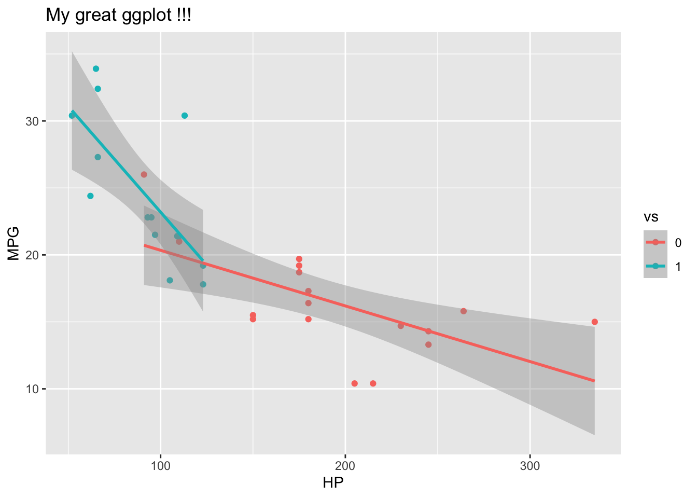
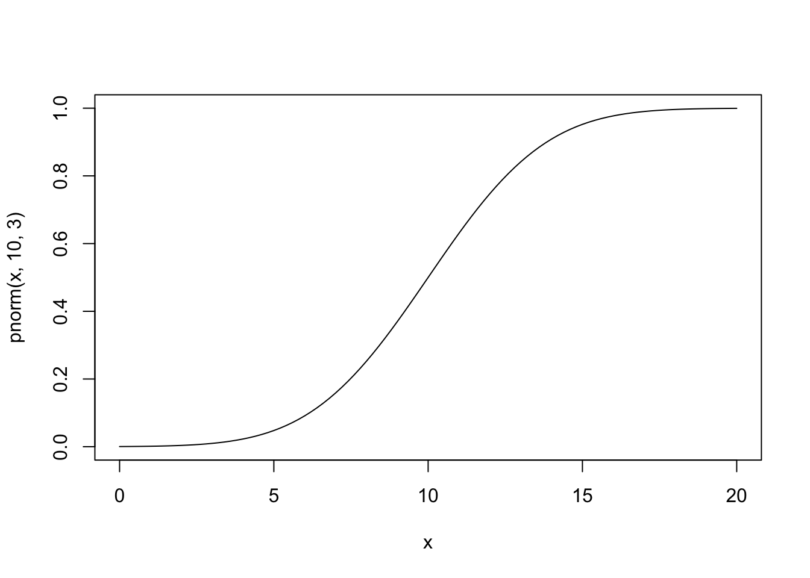

Section 5 Plotly
5.1 Reference
5.2 Load library
library(plotly)##
## Attaching package: 'plotly'## The following object is masked from 'package:ggplot2':
##
## last_plot## The following object is masked from 'package:stats':
##
## filter## The following object is masked from 'package:graphics':
##
## layout5.3 Get some data
# Inbuilt dataset
#data("mtcars")
mtcars <- data.frame(mtcars,
make=rownames(mtcars),
stringsAsFactors = F)
# Explore data
dim(mtcars)## [1] 32 12str(mtcars)## 'data.frame': 32 obs. of 12 variables:
## $ mpg : num 21 21 22.8 21.4 18.7 18.1 14.3 24.4 22.8 19.2 ...
## $ cyl : num 6 6 4 6 8 6 8 4 4 6 ...
## $ disp: num 160 160 108 258 360 ...
## $ hp : num 110 110 93 110 175 105 245 62 95 123 ...
## $ drat: num 3.9 3.9 3.85 3.08 3.15 2.76 3.21 3.69 3.92 3.92 ...
## $ wt : num 2.62 2.88 2.32 3.21 3.44 ...
## $ qsec: num 16.5 17 18.6 19.4 17 ...
## $ vs : num 0 0 1 1 0 1 0 1 1 1 ...
## $ am : num 1 1 1 0 0 0 0 0 0 0 ...
## $ gear: num 4 4 4 3 3 3 3 4 4 4 ...
## $ carb: num 4 4 1 1 2 1 4 2 2 4 ...
## $ make: chr "Mazda RX4" "Mazda RX4 Wag" "Datsun 710" "Hornet 4 Drive" ...5.4 Plotly magic
d <- ggplot(data=mtcars,
aes(x=hp,y=mpg,color=as.factor(vs))) +
geom_point(aes(text=make)) +
geom_smooth(method=lm) +
labs(title="My great ggplot !!!", color="vs", x ="HP", y="MPG")## Warning: Ignoring unknown aesthetics: textd## `geom_smooth()` using formula 'y ~ x'
ggplotly(d, tooltip="text")## `geom_smooth()` using formula 'y ~ x'# A base R plot ...
plot(mpg~hp, data=mtcars)